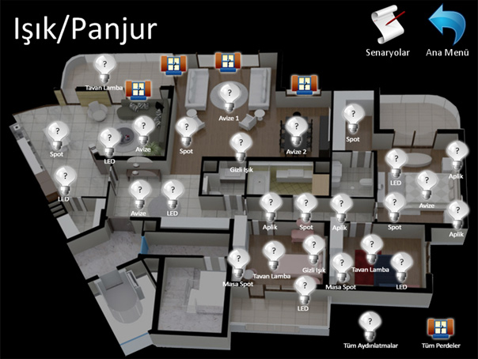
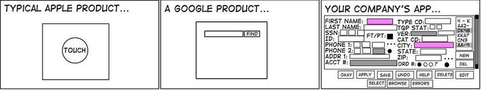
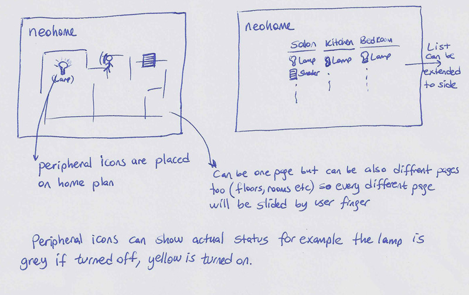
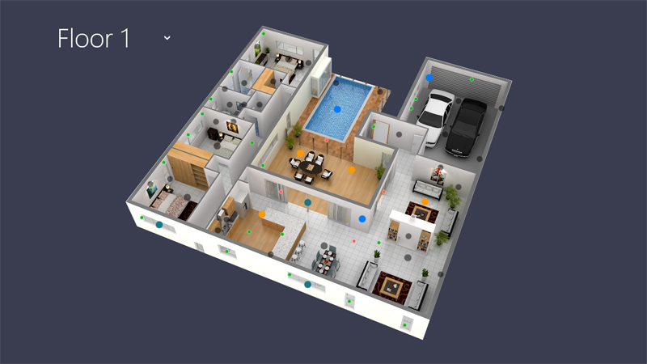
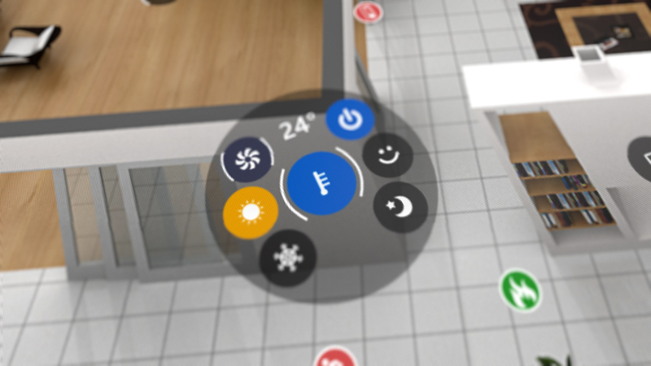
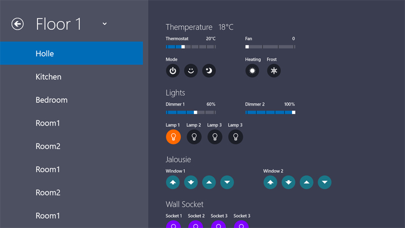
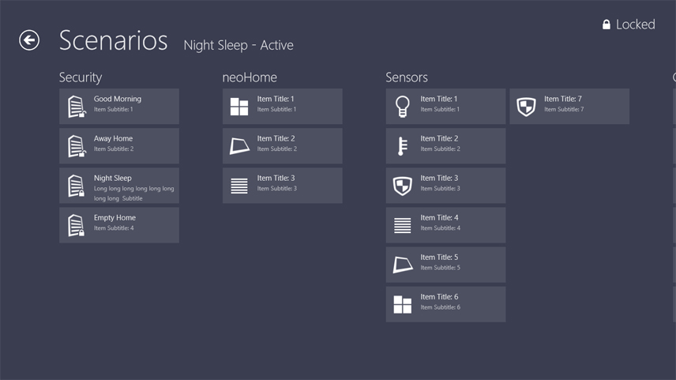

Умный дом
UI дизайн, история разработки

Как все начиналось
Все началось с того, что к нам пришел заказчик с «проектом мечты».
Заказ звучал коротко и просто: изменить дизайн UI текущей системы умного дома.
Взглянув на систему, было видно типичного представителя умного дома, каких сейчас множество, вот она в старом дизайне:
А именно: унылые иконки взятые из сети, непродуманная логика экранов, не эргономичное использование пространства маленького разрешения, гламурные градиентные кнопки, и датчики на плане этажа сделанные так, как получилось у программиста.
Но архитектура проекта представляла из себя довольно грамотное решение. Был сервер управления датчиками и анализа данных, представляющий из себя маленькую коробочку, к которому можно было подключиться тремя способами:
С домашнего компьютера через браузер (как к роутеру) в административный интерфейс — для настройки всего и вся.
С сенсорной панели при входе в дом — для управления сигнализацией, сценариями, камерами и датчиками (с нее нам было и предложено начать).
С мобильных устройств — для управления домом из любого места (в первом варианте через туже админку).
Переговорив с заказчиком, решено было делать интерфейс в стиле Windows 8, хотя сама она тогда еще не вышла, были лишь многочисленные скриншоты в сети. Опустим подробности такого решения, скажу лишь, что оно было принято единогласно и мы приступили к работе.
Тут стоит упомянуть, что у нас к тому времени был некоторый опыт проектирования интерфейсов близких по духу: панель управления яхтами (они достойны отдельных статей, но там NDA жесткое), бортовой компьютер авто и пяток сенсорных киосков.
Идея
Тема проектировки системы умного дома давно будоражила мое воображение. Решения, что существуют на рынке, и близко не приближаются к тому, что я могу назвать «Умным».
Рассмотрим пример:
Стемнело. Вам нужно включить свет в комнате. Ваши действия?
Как это происходит обычно – вы встаете и включаете свет.
По версии многих разработчиков систем автоматизации – вы берете пульт и включаете свет.
Часто тут не видят банальных проблем. Во-первых, пульта рядом может и не быть, надо-таки встать, чтобы его найти, во-вторых, не забываем, что большинство таких устройств сейчас с сенсорным экраном, это означает, что пульт нужно еще и включить. Новая мода — делать пульт с планшета или телефона (отдельное приложение), что еще больше усложняет задачу:
Встать и найти устройство — > Включить или разблокировать экран -> Запустить приложение — > Найти нужный датчик — > Профит.
Не проще ли встать и включить выключатель?
Умный дом в моем понимании – должен сам включить свет тогда, когда это вам необходимо, при этом учесть бодрствуете вы или отдыхаете, время года, количество людей в комнате, ваше местоположение в комнате и еще кучу факторов, основываясь на предыдущие ваши решения в подобных ситуациях, предугадывая ваши желания.
Иначе, дом этот сложно назвать «умным».
Пульт же — должен использоваться лишь в частных случаях и не должен являться основным элементом управления домом. По-настоящему, «Умным домом» вообще не нужно управлять — он все сделает сам.
Но до таких систем еще далеко, можно сказать, реализовать это сегодня невозможно, поэтому будем улучшать то, что можем, а именно, тот самый пульт.
Главную проблему этих решений проще показать знакомой многим разработчикам интерфейсов картинкой:

Да, почти все подобные системы — это пульты управления ядерным реактором, в которых сложно порой разобраться даже продвинутому пользователю.
Разработчики почему-то стараются поместить на экран как можно больше элементов, как можно больше возможностей и, как следствие, как можно больше проблем UX.
Так в чем же идея?
Убрать с глаз долой все лишнее, абсолютно все.
Если я хочу просто выключить свет в спальне, зачем мне видеть датчики управления водяными клапанами на кухне?
Если мне хочется закрыть все окна в доме, то я хочу делать это одной кнопкой, а не тыкать в каждый датчик по отдельности.
Если я ставлю дом на сигнализацию и в доме никого нет — это значит, что свет везде должен быть погашен, температура понижена, окна закрыты, включено видео наблюдение. И все это должно произойти без моего участия!
Одно кольцо, чтобы править всеми. Одна кнопка — «Сделать хорошо».
Лучший интерфейс тот — которого вы не видите, на который вы не обращаете внимание во время работы, который делает все за вас, либо же вы управляете им на подсознательном уровне, потому что:
Вы привыкли так.
Это очевидно.
Обращаете ли вы внимание на то, где находится кнопка Play на Youtube? Где кнопка закрытия окна браузера? Или где поле поиска в Google?
А введет ли вас в ступор сотня датчиков на одном экране системы умного дома?
Верно, все, что на самом деле требуется от подобных систем — решить одну какую-то конкретную задачу (как Play в плеере или Find в поиске). Поэтому нет смысла выводить все возможное управление на экран.
Не такая простая задача на самом деле.
Первый прототип
От заказчика мы получили его видение примерно так:

Посмотрели, подумали, и единственное, что использовали из его материалов, это спецификации датчиков и команд (сценариев пользователя).
Нас загоняло в рамки несколько моментов:
В сенсорной панели не было поддержки MultiTouch и она имела разрешение 1024*768 и 1024*600.
Metro интерфейс был новым и не было возможности пощупать его на планшетах (8-ка еще не вышла). Хотя у нас был телефон на WP7, что давало некоторое представление.
Заказчик некоторые моменты в системе не мог изменить (железные ограничения, удорожание системы, личные хотения, и тп).
В целом сделать дизайн таких экранов как: главное меню, видео наблюдение и интерком, погода за бортом, уведомления системы и подобных — не составило проблем, да и незачем об этом рассказывать, это была 1-я версия, дальше будет интереснее.
Проблемным был лишь основной экран управления датчиками. О нем и напишу.
План дома
Вот картинка типичного экрана управления датчиками с планом дома, взятая из интернета:

Скажите, многие ли из вас понимают что нарисовано на этом плане?
А поймет ли этот план ваш ребенок? А ваша бабушка? А друг, зашедший на чаек, сориентируется?
Думаю проблема понятна.
План должен быть читаем всеми и сразу. Для этого на нем должен быть виден именно ваш дом, с вашим цветом стен и основной мебелью:

А в идеале, план еще должен быть всегда позиционирован относительно сторон света.
Такое решение дороже, да и перестановка мебели сделает план не точным, но тут в любом случае — компромисс. Впрочем, ничто не мешает включить в проект любой план, либо же и вовсе без него (такое решение нами тоже было спроектировано).
Кстати, в первых версиях для премиум класса хотели сделать план в 3D, но решение сильно дороже, да и лишнее это, перспективы — вполне достаточно.
Датчики
Самая большая проблема — визуальное представления датчиков управления на плане решилась быстрее, чем ожидалось. Как сейчас помню, мы с дизайнером сидели и рисовали на бумаге WireFrames будущей системы, и решение пришло само собой:
Датчики, которые просто что-то показывают — не видны, и вспыхивают только тогда, когда что-то не в порядке (пожар, поломка, проникновение в дом, и пр..), одновременно в доме срабатывает сигнализация.

Датчики типа «вкл./выкл.» — кружочки с иконками разные по цвету в зависимости от типа, и их размер подогнан под палец.
Датчики типа «диммер» многопозиционные и совмещенные — вот тут самое интересное, они такие же, как и предыдущие, с той лишь разницей, что у них есть метки, показывающие куда можно сделать жест. При нажатии датчик активируется (всплывает его панель управления и информации) и анимируются метки жестов, показывая, что можно крутить туда-то.
Жест, изменяющий значение, можно делать и не активируя датчик отдельным нажатием. При жестах, датчик выводит крупно информацию об изменяемых значениях, которая потом преобразуется в маленькую циферку рядом с сенсором.
Ниже я прикрепил видео, где видно как это работает.
Одна кнопка
«Ну и где же тут одна кнопка?» — спросите вы.
А вот где:
«Одна кнопка» — это условность, под этим я понимаю одну функцию — самую важную и вынесенную на передний план.
Разрешение у нас маленькое, показывать на нем красочный план и утыкав его датчиками «по самое не хочу» — плохая идея.
Стоит вспомнить, что сейчас я описываю создание стационарной версии пульта (т.е. это монитор вмонтированный в стену).
Основные сценарии типового использования этой панели таковы:
еловек открывает входную дверь — > активируется панель и предупреждает нас, что нужно отключить сигнализацию — > вводится пароль — > активируются сценарии, заданные для этого дома.
То же самое при выходе из дома — ставим на сигнализацию
Если кто-то звонит в дверь — смотрим кто, через интерком, который показывается поверх любого экрана при звонке с улицы, и открываем дверь.
Активация пользовательских сценариев — например режим «Ночь», когда двери и окна запираются, включается видео наблюдение, снижается температура и пр.
Управление отдельными датчиками с этой панели не очень-то удобно (ну сами посудите, вы будете настраивать яркость света в спальне, находясь в коридоре?).
Управление возможно, если панели встроены по всему дому.
Но, по словам заказчика, функция эта там необходима, нужно делать.
Решение
При входе на экран, пользователь видит только план дома. Датчики видны в виде очень маленьких точек (для того, чтобы знать где они).
Кроме возможности переключить этаж, у пользователя всего 2 варианта:
1. Активировать панель опций, что позволит, например, вывести все термостаты в доме на план и настроить температуру, как не предусмотрено сценариями, или, например, активировать розетки в гараже:

2. Увеличить план. Чем больше увеличиваем — тем больше датчиков превращается из маленькой точки в полноценный контрол управления, датчики появляются в зависимости от приоритета. Тем самым не загромождая собой пространство:

Пользователь всегда видит только то, что ему необходимо.
Интеграция
Решение заказчика было на WPF, а интеграция дизайна в XAML, это основная моя специализация. Поэтому мы не только «рисовали картинки», но и реализовывали дизайн на практике.
О том как мы делали контролы и их XAML, все это анимировали и привязывали к плану дома, можно написать отдельную большую статью, но чем меньше знают конкуренты, тем более ценны мы как специалисты. Да и нет особого смысла описывать решение стационарного пульта, т.к. далее речь пойдет о планшетной версии.
Кому интересен не только экран управления датчиками, но и все остальное, могут посмотреть итоговый результат на видео:
Or in the video:
В сумме на проектирование, дизайн и его реализацию в демо приложение, которое в дальнейшем ушло программистам заказчика уже непосредственно для привязки железа и логики, у нас ушло около 5 месяцев.
И, как обычно это бывает, сделав проект — всегда хочешь его переделать, потому что уже видишь как сделать его лучше, его недостатки и слабые места, а слабых мест тут было много.
Пока я делал XAML, вышла Windows developer preview, и я тут же поспешил ее потрогать на десктопе и на своем планшете (Aser Iconia W500). Так же вышли официальные Guidlines, что позволило взглянуть на Metro UI по-новому.
Часть 2. UWP приложение
Всё что мы сделали — фигня
Заказчик был очень доволен, особенно когда мы презентовали рабочую демку. Можно сказать, счастью его не было предела. Я видел недостатки проекта, но в тоже время знал, что довести до идеала его можно лишь работая над ним много времени в паре с командой хороших программистов, но это не имело значения на данном этапе развития продукта.
Заказчик, как и я, уже посмотрел новую Windows 8, и мы оба считали, что она очень хороша. Поэтому на мое предложение: «А давайте сделаем версию для планшета?», отреагировал очень положительно. Я предложил не менять встраиваемую в стену систему, т.к. она не поддерживала MultiTouch, ставить туда восьмерку не было смысла. Её редизайн оставили до лучших времен, сосредоточившись на Metro/Windows store приложении (именно Metro, т.к. это позволит распространять демку в маркете для привлечения клиентов).
К сожалению, бюджет у заказчика оказался не резиновый, но я согласился, по сути версию для Windows 8 мы подарили. Отчасти это было необходимо, у нас была очень хорошая работа в портфолио еще до релиза восьмерки.
Второй прототип
Через пару недель мой дизайнер предоставил мне свое видение планшетной версии продукта:

Я был немного расстроен, дизайн был далек от того что было нужно, я попытался объяснить ошибки, но нельзя научиться плавать не залезая в воду, дизайнер не мог дать мне то, что я хотел, потому что тогда у него было слишком мало опыта общения с Windows 8/10.
Поэтому было решено все переделать, но вести работу над дизайном совместно со мной, делая все сразу в XAML.
Это решит проблему нехватки скилов по Guidlines у дизайнера, а мне, как разработчику, не даст испортить картинку.
Дизайн V2 и одновременная интеграция
Честно сказать, это было чертовски сложно. Я готов был убить разработчиков Blend 5, ибо по сравнению с 4-й версией, это было глючное, неработоспособное, постоянно вылетающее чудовище. Сейчас дело обстоит получше, но некоторых моментов не хватает.
Меня спасла VS 2012, в нее частично включили функционал бленда для управления стилями.
Новый XAML — это тема отдельного разговора, половины старых классов нет, дефолтные стили никуда не годятся, триггеры удалили — оставив только не богоугодные Visual States. Так же пришлось переписать проект с нуля когда Win 8 обновилась до Relize Preview, но те изменения были в лучшую сторону.
Справедливости ради, в последствии - XAML в UWP приложениях Windows 10 стал на порядок быстрее и функциональнее чем в WPF и win8
Новая концепция
Новое устройство — новый подход. Пришлось пересмотреть идею стартового экрана, теперь он был не нужен, а вся навигация выносилась в верхний AppBar.
Долой все кнопки с экрана: Zoom — жестом, у нас же полноценный MultiTouch, все управление датчиками — в нижний AppBar.
Теперь приложение стартует сразу с показа плана дома (в идеале оно должно отслеживать в какой комнате находиться пользователь и сразу ее немного увеличивать позиционируя по центру).
Открываем приложение: 
Делаем жест Zoom (или мышкой CTRL+колёсико):

Или достаем AppBar:

Элементы управления
Контролы датчиков пришлось переписать с нуля, и сделать их нативными с нормальной поддержкой жестов Windows 8/10.
Было учтено, что теперь у нас управление 2-мя способами, пальцами и мышью.
Так же был вылизан внешний вид датчиков, стало более стильно:

Особенно наповал сразила скорость работы приложения. Производительность в Windows8 приложениях на порядки выше WPF. Я боялся, что планшет не осилит систему, но все просто летает. Microsoft превзошли самих себя, теперь не имеет значения насколько сложен XAML, все будет работать быстро. Если в WPF приходилось делать самопальные алгоритмы кеширования экранов для быстрой анимации, думать над сложностью ветвления XAML, оптимизировать количество элементов в дереве контрола, то в восьмерке, это просто не имеет значения, анимация любой сложности и любого количества объектов всегда плавная.
Вариант без плана

Тут были не нужны датчики с поддержкой жестов, не нужно было экономить пространство. Получилось конечно не так эффектно, но хорошо.
Сценарии
Управление датчиками, это конечно хорошо, но, как я уже писал, базовые операции с ними лучше автоматизировать.
Для этого в административном интерфейсе есть базовые предустановки сценариев и возможность создания своих.
Нажали сценарий «Отпуск» и дом сам выключит всё ненужное, запрет двери и включит сигнализацию
На планшете это выглядит так: 
Одна кнопка
От этой концепции мы не отходили с самого начала.
Часто задают вопрос: «А где тут работы на полгода?»
И это я воспринимаю как похвалу. Это значит, я добился того — чего хотел. Пользователь просто не видит, что функционал приложения — довольно большой, ведь видно только то, что нужно на данный момент. Данные и необходимые экраны сами показываются пользователю, а не он ищет их. Интерфейс понятный с первых минут, не пугающий обилием кнопок и в тоже время любое действие выполняется на «раз — два — три».
На создание только версии под Windows 8 ушло 3 месяца (c учетом наработок в первой версии, с нуля было бы больше).
К слову. Вы замечали, что везде в Windows, такой элемент как PopUp — всегда один? Чтобы мы не открыли, всплывающая форма — всегда одна, если открыть другую — предыдущая закроется. У меня в интерфейсе была беда: датчик после активации закрывался через определенное время сам, но если активировать один, а потом другой сразу — они были открыты оба, выглядит не очень эстетично и понятно. Спасибо моему второму дизайнеру за этот фитбек. Он не принимал непосредственного участия в проекте, но некоторые вещи реализованы благодаря его наводкам.
Я неделю бился над решением этой проблемы.
И я ее решил…
Одной строчкой кода.
Мораль: иногда за самыми простыми решениями скрывается очень много работы.
Фитбеки от Microsoft
Прошлой весной Microsoft проводила акцию, где все разработчики могли получить бесплатные рекомендации по улучшению UI/UX своих продуктов. И мы успели на эту раздачу.
Если честно, то я боялся что разнесут все в пух и прах, это же был мой первый опыт с восьмеркой. Но, все прошло гладко, по словам заказчика, в Microsoft очень высоко оценили качество приложения. Мы получили несколько небольших рекомендаций по улучшению юзабилити (к слову очень грамотных) например это:
Очень верное замечание, берите на заметку. Если мы выделяем какой-то объект и далее возможны действия с ним — AppBar должен открыться сам! Показав пользователю эти самые возможные действия.
Вообще проблема гораздо шире, озвучу так — очевидные действия должны выполняться сами, не нужно ждать, когда это сделает пользователь.
Все поправки я внес менее чем за день. И на душе стало тепло и спокойно.
Итого
На данный момент система находиться в стадии разработки, у заказчика не так все хорошо, как хотелось бы. Поэтому и пишу пост спустя почти год, дата релиза неизвестна и сейчас.
Приложение можно потрогать из Windows Store тем у кого стоит Windows 8/10, но перед этим нужно поставить в настройках Турецкую локаль.
Но сейчас в Store лишь урезанная версия, демонстрируюшая основные возможности. Когда-нибудь система будет доделана, а так как мы переделывали старую — вероятность этого велика. Надеюсь, у заказчика дела пойдут в гору и мы продолжим работу над проектом. А работы там еще очень много: web версия, сайт, фирменный стиль (мы разработали лишь логотип и его идею, но надо развивать), версия под iOS, Android. Да и версию под Windows 10 я бы сейчас немного переделал, мы ее закончили прошлым летом, с тех времен в WIndows много что поменялось, да и мои скилы в этой области подросли.
Ну и напоследок видео про версию на Windows 10 (cмотрите HD):
Будем рады заказам на дизайн интерфейсов для ваших систем.
Удачи в ваших начинаниях!
-
 Упаковочный автомат
Упаковочный автомат -
 Осциллограф
Осциллограф -
 Медицинский Лазер
Медицинский Лазер